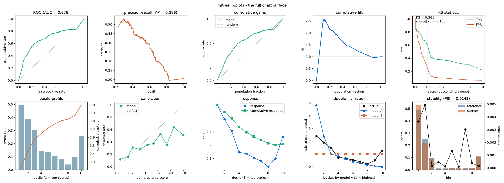
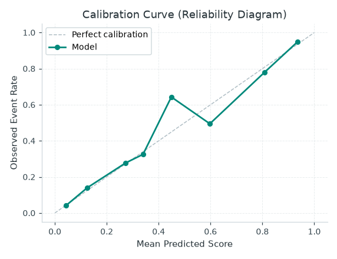
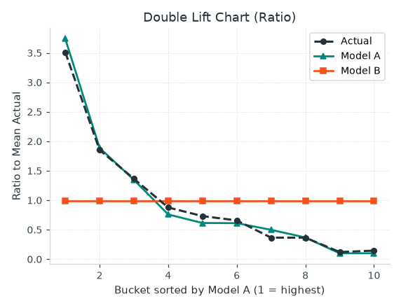
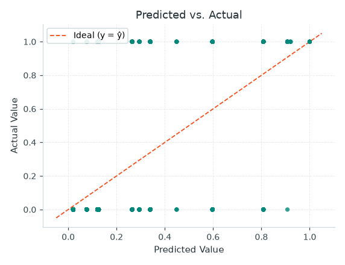

Metrics, Diagnostics & Probability Calibration¶
A model score without diagnostic verification is an operational liability. A high AUC can disguise severe probability miscalibration, and an acceptable test RMSE can hide heteroscedastic residual explosions or catastrophic drift.
mltreelib.Metrics and mltreelib.plots provide an evaluation and visualization engine implemented with pure numeric precision, independent of heavy visualization dependencies (matplotlib is an optional extra: pip install mltreelib[plotting]).
flowchart LR
A["Fitted Model Predictions\nScores y_hat vs Truth y"] --> B{"Task Type"}
B -- "Classification / Risk" --> C["Discrimination\nROC AUC, PR AUC, KS Statistic"]
B -- "Regression / Amounts" --> D["Loss Surface & Residuals\nRMSE, MAE, MedAE, Pinball Loss"]
C --> E["Reliability Calibration\nDecile Brier Score & Hosmer-Lemeshow"]
E --> F["Operational Triage\nCumulative Gain & Lift @ Budget"]
F --> G["Stability & Drift\nPopulation Stability Index (PSI)"]
D --> H["Heteroscedasticity\nResidual Variance vs Fitted"]
classDef blueBox fill:#1e3a8a,stroke:#3b82f6,stroke-width:2px,color:#ffffff;
classDef greenBox fill:#14532d,stroke:#22c55e,stroke-width:2px,color:#ffffff;
classDef grayBox fill:#334155,stroke:#64748b,stroke-width:2px,color:#ffffff;
class A,B grayBox;
class C,D blueBox;
class E,F,G,H greenBox;1. Multi-Panel Diagnostic Surface¶
Every chart in mltreelib.plots operates on native Matplotlib Axes, allowing multi-metric dashboards in a single figure:

Next: section 2 lists the classification charts to place on these axes, starting with ROC, PR and calibration.
2. Classification Diagnostics & Probability Calibration¶
In credit triage, fraud detection, and medical diagnosis, ranking alone is insufficient. Underwriters make decisions based on expected dollar loss, which demands calibrated probabilities \(P(y=1 \mid \mathbf{x})\).
| Diagnostic Chart | Core Question Answered | Failure Mode Diagnosed |
|---|---|---|
plot_roc / plot_pr |
Can the model rank positive instances ahead of negatives? | High ROC with low PR indicates severe false-positive flooding under class imbalance. |
plot_calibration |
Does a predicted score of 0.20 correspond to exactly 20% empirical event rate? | S-shaped curve indicates over-confidence; inverted curve indicates mis-specified link function. |
plot_ks |
What is the maximum separation distance between default and non-default distributions? | Identifies the optimal cutoff threshold \(\tau^*\) maximizing operational divergence. |
plot_double_lift |
When comparing Model A vs Model B, which model captures more true events across deciles? | Reveals regions where a challenger model outperforms a production champion. |
plot_psi |
Did the score distribution shift between training (baseline) and inference (current)? | PSI \(> 0.25\) signals severe population drift requiring immediate model retraining. |
Visual Examples¶
| Reliability Calibration Curve | Double-Lift Model Comparison |
|---|---|
 |
 |
Next: section 3 covers the regression branch, which swaps the probability charts from section 2 for residual charts drawn on the same Axes.
3. Regression & Residual Diagnostics¶
For continuous pricing, demand forecasting, and risk models:
| Diagnostic Chart | Core Question Answered | Failure Mode Diagnosed |
|---|---|---|
plot_residuals |
Are residual errors mean-zero and homoscedastic across all response levels? | Funnel-shaped residual spread signals heteroscedasticity, calling for gain="heteroscedastic" or Tweedie. |
plot_importance |
Which features drove the split deviance reduction across the tree? | Over-reliance on single surrogate features or leakage columns. |
plot_breakdown |
Why did this individual loan applicant receive this exact predicted rate? | DALE-style waterfall attribution decomposed by tree split paths. |

Next: section 4 runs the classification side in one script, computing the ROC, PR, Brier, KS and PSI values from section 2 and plotting calibration and double-lift charts, without the regression charts from section 3.
4. Code Example: Computing the Full Metrics Suite¶
import numpy as np
from mltreelib import Metrics, MetricsReport, plots
import matplotlib.pyplot as plt
# 1. Generate realistic credit default probabilities and observed labels
rng = np.random.default_rng(2026)
n_cases = 1000
# True baseline event probability
true_risk = rng.beta(a=0.8, b=4.0, size=n_cases)
y_true = rng.binomial(1, true_risk).tolist()
# Predicted risk probabilities from champion model and noisy challenger
y_prob_champ = np.clip(true_risk + rng.normal(0, 0.08, n_cases), 0.001, 0.999).tolist()
y_prob_chal = np.clip(true_risk + rng.normal(0, 0.15, n_cases), 0.001, 0.999).tolist()
# 2. Compute Discrimination and Calibration Metrics
rep = MetricsReport("classification", y_true=y_true, proba=y_prob_champ)
print("Champion Model Performance:")
print(f" ROC-AUC: {rep['auc']:.4f}")
print(f" Average Precision (PR-AUC): {rep['average_precision']:.4f}")
print(f" Brier Reliability Score: {rep['brier']:.4f}")
print(f" Kolmogorov-Smirnov (KS): {rep['ks']:.4f} (Score @ KS cutoff = {rep['score_at_ks']:.3f})")
# 3. Population Stability Index (PSI) Drift Check against subsequent test cohort
metrics = Metrics()
y_prob_subsequent = np.clip(true_risk * 1.15 + rng.normal(0, 0.08, n_cases), 0.001, 0.999).tolist()
psi_res = metrics.stability_index(y_prob_champ, y_prob_subsequent, 10)
psi_val = psi_res["psi"]
print(f" Population Stability Index (PSI): {psi_val:.4f} ({'Stable' if psi_val < 0.10 else 'Shift Detected'})")
# 4. Render Calibration and Double Lift Curves Side-by-Side
fig, (ax1, ax2) = plt.subplots(1, 2, figsize=(12, 5))
plots.plot_calibration(y_true, y_prob_champ, ax=ax1)
plots.plot_double_lift(y_true, y_prob_chal, y_prob_champ, ax=ax2)
plt.tight_layout()
# In a script or notebook, call plt.show() to display the figure.
plt.close(fig)
Champion Model Performance:
ROC-AUC: 0.7700
Average Precision (PR-AUC): 0.4528
Brier Reliability Score: 0.1196
Kolmogorov-Smirnov (KS): 0.4392 (Score @ KS cutoff = 0.175)
Population Stability Index (PSI): 0.0273 (Stable)
Related Guides
- Why Credit Scoring Needs Glass-Box Trees for asymmetric cost optimization using KS cutoffs.
- Model Inspection & Quinlan Rules for white-box split path audits.